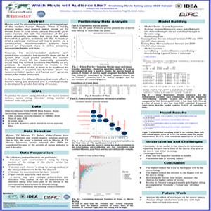
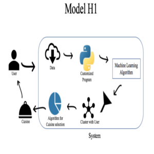
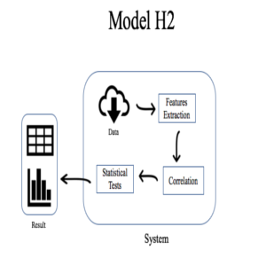
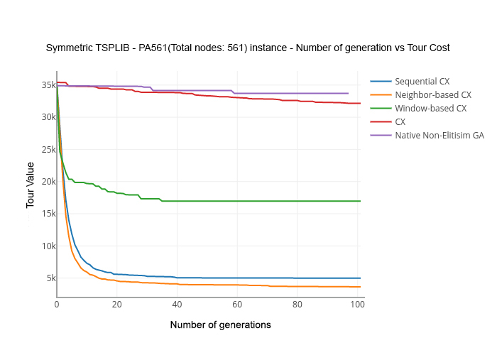

About Me
Hi, I'm Dashmeet. I'm a full-stack Software Engineer with 6+ years at Meta building products used by millions. I've worked across growth, consumer, and platform teams - owning features end-to-end from idea to launch. I'm drawn to the intersection of technology and real user impact. Outside of work, you'll find me hiking, traveling to new places, or catching up with family and friends.
Experience

Meta
Software Engineer · Apr 2020 – Present
Applied AI April 2026 - Present
Building the next generation of frontier models
VR & Horizon Travel Jul 2023 – April 2026
Getting users together in 3P apps and metaverse
- Owned Destination-Centric Invites end-to-end; collaborated with 10+ cross-functional partners, resulting in a 1.5% increase in Horizon Time Spent.
- Scaled the invite system into a robust state management platform to rapidly deliver 8 products.
- Led technical design for travel error handling with PM and design; reduced error rate by 5%.
- Grew 4 junior engineers through promotion cycles; conducted 10+ engineering interviews.
- Reduced on-call load from 25 hrs/week to 5 hrs by building an AI-powered on-call bot.
Social Graph & Privacy Settings Jan 2021 – Jun 2023
Expanding user graph and providing profile settings
- Migrated 2.2 million accounts from Friends Model to Follow Model.
- Drove 0.54% (+16K) increase in follows through A/B tests and optimized product performance.
- Refactored legacy Privacy System; improved user understanding through tooltips and upsells.
- Shipped Privacy Settings for parent-managed teen accounts, impacting 40k+ of accounts.
Growth Jun 2020 – Dec 2021
User acquisition, monetization, engagement, and retention
- Built growth experiments across the funnel; drove a 2.43% (+20K/month) increase in Monthly Active Buyers.
- Shipped Incentive Engine that became a core part of the monetization loop, eliminating low-ROI incentives.
Software Engineering Intern
New York State Department of Health, Albany, NY
May 2019 – Aug 2019
Contributed to open-source BCI2000 at the National Center for Adaptive Neurotechnologies: implemented threading to improve CPU utilization, integrated with PsychoPy, and debugged signal processing modules to improve data acquisition.
My Skills
Full Stack
- HTML
- CSS
- JavaScript
- React
- React-Native
- GraphlQL
- jQuery
- Ajax
- JSP
- Servlet
- Node.js
- REST
Programming & Databases
- Python
- PHP/Hack
- C
- C++
- Java
- R
- SQL
- MongoDb
Cloud & Data
- Amazon Web Services (AWS)
- Docker
- Git
- PostgreSQL
- IBM SPSS Modeler
Product & Process
- A/B testing
- Feature flags
- Experimentation
- PRD review
- Funnel Analysis
- Dashboards
Projects
Here are some of the projects that I have worked on.
-
The Stretch Goal Request Board for BD
-

Analyzing and Predicting Movie Ratings from IMDb data
-
Tennis Analytics
-

Restaurants, Cuisine Recommendation & Feature Correlation by analyzing Yelp data
-
Usability testing on HTMLEditor - a site to learn HTML (an RCOS: Rensselaer Centre for Open Source Project)
-
Enhancing the Algorithms for Solving the Traveling Salesman Problem and Simulation of Best Path using a Robot
-
The Stretch Goal Request Board for BD
Developed The Stretch Goal Request Board for Becton Dickinson(BD) as part of IT Capstone. The focus was on to apply gamification in a workplace and to provide an user-friendly web-application. The application motivates associates to take on work which otherwise would have been shelved. The project was developed using MEAN. I served as a technical manager and developer.
-

Analyzing and Predicting Movie Ratings from IMDb data
Analyzed the effects of different features such as actor rating, director rating and genre on the rating of a movie from a 3GB open dataset taken from IMDb. The insights were that a movie rating is highly dependent on the rating of its directors & actors. Linear regression, Decision Tree, Random Forest and SVM models were developed and compared. Linear Regression performed the best with an accuracy of 83.9%. The only uncertainty in the model is that the movie plot's effect is not taken into account for predicting the movie rating. The image shows the poster of the project. The source code is available here
-
Tennis Analytics
Developed a model to predict the exact score for a match in Men Grand Slam Tournaments. The target was categorised into six categories {(number of sets won by player 1 - number of sets won by player 2) 3-2, 3-1, 3-0, 0-3, 1-3, 2-3 }. The models developed were multinomial logistic regression, linear discriminant analysis and random forest with boosting. The multinomial logistic regression achieved the highest accuracy of 60.11%.
-

Restaurants, Cuisine Recommendation & Feature Correlation by analyzing Yelp data
Derived a method by analyzing 3GB of Yelp data to fulfil the following goals: 1. To recommend new cuisines and restaurants to the users based on ratings that they might like. 2. To recommend features to the restaurants that would probably help restaurants increase their star ratings, thereby, the number of users and revenue.
Process:
1. Using dynamic k-means clustering and restaurant ratings (average rating/average number of stars), a new cuisine is suggested to a user based on which cluster the user falls in and providing top five restaurants (if available) in the chosen city based on the ratings given by users. 2. Identifying a correlation between the comforts provided by the restaurants to the ratings given by the users and validate the correlation using the t-test. -
Usability testing on HTMLEditor - a site to learn HTML (an RCOS: Rensselaer Centre for Open Source Project)
Improved the usability of EasyHTML Editor - a website to learn HTML (an RCOS - Rensselaer Centre for Open Source) by leading a team of 5 to do usability testing. Different types of user testing and analysis learned and performed: User Analysis, Surveys, Usability testing, Focus groups, Focus Interviews.
What did I learn: Collaboration with developer team, the importance of usability on interfaces, team management, leadership. -

Enhancing the Algorithms for Solving the Traveling Salesman Problem and Simulation of Best Path using a Robot
The project consists of various approximate approaches to solve the well-known np-complete Travelling Salesman Problem. (TSP). Several approaches include using Genetic Algorithm with different crossover operators such as Sequential Constructive Crossover (SCX), Single Point Crossover (SPCX), Greedy Constructive Crossover (GCX), Neighbor-based Constructive Crossover (NCX), Window-based Constructive Crossover (WCX) were analyzed and compared. Another approach is using the Simulated Annealing algorithm includes basic Simulated Annealing algorithm and Dynamic Simulated Annealing Algorithm with Cooling Enhancer and Modified Acceptance Probability (DSA-CE&MAP) for solving TSP. Enhanced algorithms created by us are:- NCX, DSA-CE&MAP. Our algorithms improved the average value obtained by 5%. In addition to this,a simulation was done using a robot car.
Research Papers
Dynamic Simulated Annealing for solving the Traveling Salesman Problem with Cooling Enhancer and Modified Acceptance Probability
Abstract
In this paper, a dynamic (i.e. self-adaptive according to the number of nodes) Simulated Annealing Algorithm is presented to solve the well-known Traveling Salesman Problem (TSP). In the presented algorithm, the temperature parameter is adjusted on the basis of the number of nodes. To achieve dynamicity, a new parameter named “Cooling Enhancer” is introduced to control the cooling rate, thereby, regulating the temperature. Additionally, an enhanced version of acceptance probability has been used. The efficacy of Dynamic Simulated Annealing with Cooling Enhancer & Modified Acceptance Probability (DSA-CE&MAP) is compared against the basic simulated annealing algorithm (SA) [2] for some benchmark TSPLIB instances [1]. Experimental results illustrate that the new dynamic simulated annealing algorithm performs better than the basic simulated annealing algorithm for solving TSP. It has been observed that the quality of solutions (i.e. minimum total cost or distance) is significantly increased as compared to earlier method.
Published in International Journal of Scientific and Research Publications, Volume 8, Issue 3, March 2018.
DOI: 10.29322/IJSRP.8.3.2018.p7531
Genetic Algorithm for solving the Traveling Salesman Problem using Neighbor-based Constructive Crossover Operator
Abstract
In this paper, a new crossover operator named Neighbor-based Constructive Crossover (NCX) is evolved for a genetic algorithm that generates high quality solutions to the Traveling Salesman Problem (TSP). The proposed crossover operator uses the better edges present in parents’ structure by comparing the neighboring nodes of a node in order to generate off-springs. The efficacy of the proposed crossover operator, NCX is set against two other crossover operators, single point crossover (SPCX) [19] and sequential constructive crossover (SCX) [1] for several standard TSPLIB instances [2]. Empirical results and observations illustrate that the new crossover operator is better than the SPCX and SCX in terms of quality of solutions.
Published in International Journal of Engineering Sciences & Research Technology, Volume 7, Issue 4, April 2018
DOI: 10.5281/zenodo.1213003
Education
Favorite Quotes
I have no special talents, I am only passionately curious. Albert Einstein
It always seems impossible until it's done. Nelson Mandela
Do the difficult things while they are easy and do the great things while they are small. A journey of a thousand miles must begin with a single step.Lao Tzu